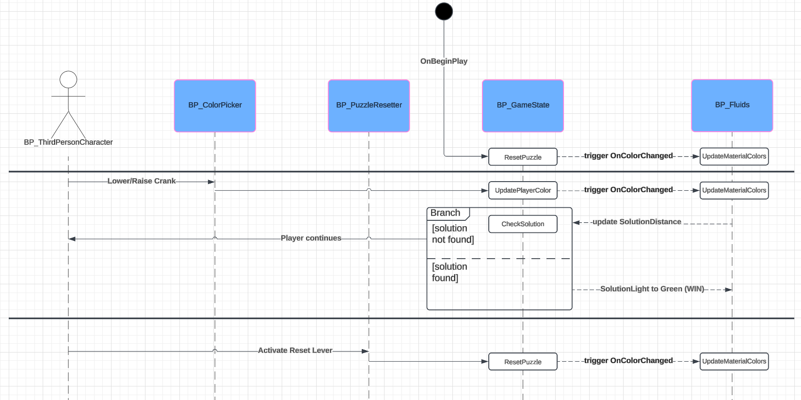

Creating a Puzzle Prototype Game in Unreal Engine 5
In this blog series, I'd like to walk you through the development of my UE5 puzzle game prototype. Using
Blueprints and some assets from the Epic Games Marketplace, I took a simple idea and turned it into a
fully functional color puzzle. I'll give a high level overview of the structure and logic of the puzzle, as well as
provide videos of the progress made during each iteration. At the end, I'll share my full walkthrough video so you
can see all of the node graphs in full detail if you are intersted. Hope you enjoy!
The rules of the game are simple: set the individual R, G, and B color channels so that they mix into the target
color (chosen randomly). If the player's color is close enough (based on a tolerance we can set), the player
succeeds.
By keeping the basic rules and win condition of this puzzle brief and straightforward, I wanted to use this project
as an opportunity to get hands-on with a variety of tools and features in Unreal Engine 5. Being somewhat new to
the engine, but otherwise comfortable with graphics, I wanted to see how multiple Actors can communicate.
Additionally, I hoped to create a visually pleasing shader/material to complement the puzzle scenario.
Using Unreal Engine 5.3.2, I began with the basic third-person template with Quinn as my ThirdPersonCharacter. I
created a new empty level and set up a few Input Actions: Z (Crank Down), X (Crank Up), and E
(Interact). For now, I am using the default world lighting that Unreal provides and have given myself a large plane
to stand on, which means I have an empty level that I can run around in as Quinn.
To reach the image above, we'll take this in stages. Let's first get the basic game logic working!
Base Puzzle Logic
There are a few things our puzzle needs to do at minimum. We need to generate a random color when the level
starts, we need to let the player control the three independent color channels, and we need to be checking if the
combination of those color channels matches the random color we generated. Using Unreal's GameState Actor, we can
achieve a lot of this!
I first created a Blueprint for an Actor called ColorPicker. This would be a generic Actor that holds a valve that
can be spun by the player. As the parent Actor, it carries only rotation logic; but if we create three instances of
it, then allow them to independently control three different GameState variables, we can keep our node graphs clean.
Below is a clip of the generic ColorPicker responding to the Player when they are within the interaction range.
Next we have to set the GameState up with the variables we want to track. To keep it brief, we need to track six
float values that are between 0.0 and 1.0. Three of them are static and determine the color the Player must create,
and three of them are initialized to an abritrary value. By hooking up the Z and X keys to the independent
ColorPickers, we can allow the Player to control those three values. In the clip below, notice the details pane and
how the values are changing in accordance with the Player's input.
Next, let's actually use these GameState values to affect the scene! By creating a base material that defines
a fluid aesthetic, we can then create Dynamic Material Instances so that the same liquid effect can be given
different base colors.
Dynamic Material Instances
Just like the Blueprints, I give a full breakdown of my final material effect in my walkthrough video, so I
encourage you to check that out if interested. Essentially, I played around with various combinations of noise
patterns to create an effect that looked like a liquid and wanted it to be interesting enough to work during
this testing phase. By using Event Dispatchers, I was able to use the ColorPickers to inform the separate material
instances to update their base color, which I had exposed as a Vector Parameter. Below you can see a clip of my
three ColorPickers being used to update the colors of several materials.
After getting this communication in place, I was able to take some time to play with some different arrangements
and meshes. Ultimately, I decided I wanted to have three falling streams of liquid mixing into a single pool. Below
is a clip that shows the basic idea I am going for.
Now comes one of the super fun parts of the project - developing the shader!
Shader Design
After a couple of iterations, I stumbled on a visual style that stuck out to me. The clip below shows an early
stage of the style I would proceed with.
Not only do we want the shader to mimic a fluid somewhat, we also want to sell the illusion of there being one
continuous body of liquid. Here, I chose to add some color lerping near the bottoms of the falling streams, making
the transition between meshes appear smoother. I also went with a world position offset effect to make the
liquid appear as if it were bubbling, which added some activity to the liquid so it didn't appear flat. On top of
that, I wanted to provide additional feedback in the form of a UI progress bar. This would give the player an even
better idea of how close they were getting to the right answer. The below clips include a percentage in the bar,
which I ultimately did not keep in the final.
Level Design
With the shader effect coming together, I started to brainstorm a scene and environment that would complement it.
The first that came to mind was an alchemist's lab or a sewer. Thanks to the rotating free assets in the Epic Games
Marketplace, I was fortunate to have some set pieces and prefabs that fit this idea ready to use. I also found some
free SFX for things like the sound of steam releasing or ambient water drops. With all of these elements, the level
really started coming alive. See the clip below for the first demo in the new environment.
In addition to some background props to help set the scene, I have also updated the ColorPickers to appear as pipes
so that they are more convincing. Although I continued to tweak and adjust things past this point, it is safe to say
we have achieved our original goals! Having connected all of these parts together in my first prototype, I am very
happy with the progress I've made. In the next and final post, I'll do an overview of the project architecture, talk
about some of the final tweaks I made, and share my final walkthrough video with you so you can see it all in
detail. Thanks for reading!
Summary & Final Thoughts
To visualize the communication of parts, here is a sequence diagram of the running game loop. The classes in this
diagram are the Blueprints, and the processes being run are functions or events found within them. Click to enlarge
the diagram.

The diagram only contains the actions and events that are crucial to the game loop and resolution of the win
condition; to see everything in detail, please watch the full walkthrough video. In it, I describe the project
in its entirety and walk through every node graph.
Thanks for reading to the end! This project was a blast to work on, since it let me use a bunch of different parts
of Unreal Engine that I hadn't explored before. Having set up character input, dynamic materials, and cross-actor
communication in this project, I'm excited to play around in game engines and DCC software further. For now, I
appreciate you following along and I hope you enjoyed!